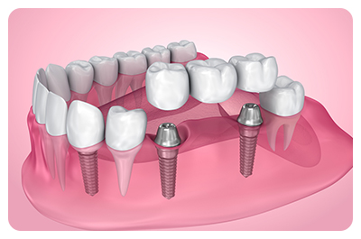

Dental Implant Treatment in Addis Ababa
dental-implants treatment in addis ababa
Searching for a dental implant specialist in Addis Ababa to replace a lost tooth? Look no further.
You have come to the right place. We have experts dentists in our dental clinics capable of providing you with natural looking and feeling implants.
Schedule a dental implant treatment by appointment at our dental implant clinic in Addis Ababa.
Dental Implant treatment in Addis Ababa, Ethiopia
Our dental clinic in addis ababa is the right place to go if you are looking for the best dentist in Addis Ababa.
We are proud to have helped, so many patients get long-lasting, high quality dental implants that are affordable and of premium quality.
You will be in good hands with our prosthodontists specialist and principal dentist who accumulates more than 10 years experience in
fitting dental implants for patients in Addis Ababa, Ethiopia.
Related content : Best dentists near "semit, Addis Ababa"
You may be missing other aspects of life if you lose some of your natural teeth.
Maybe it’s difficult for you to smile freely (see : cosmetic dentistry in Addis Ababa) or maybe you can not eat the food you desire the most
because of that. Some people even experience discomfort and muscle strains as their remaining teeth shift. But it doesn’t have to be like this.
What is a dental implant
what is a dental implantDental; implants are small titanium screws that can be used to replace the root of a missing tooth.
The implant is placed into the bone of either the upper or lower jaw. Once it has bonded with the bone, the dental implant
will be used to support a new replacement tooth.
Apart from that, dental implants can replace one or more missing teeth.
They replace natural teeth in their function and their look.
Implants are a well-recognized restorative option that has a long history of success.
In addition, implants preserve facial structure integrity and minimize inconveniences associated with tooth loss.

Is dental implant procedure painful ?
Implant surgery can cause trauma to the jaw and gums. Because the mouth will be anesthetized, there should not be any pain during surgery.
You may feel some pain as the local anesthetic effect wears away.
Before going back home, the dentist will prescribe you some pain relief medication to manage discomfort at the site of the implant.
A single implant is usually more comfortable and causes less pain than multiple dental implants.
The majority of patients will feel pain for up to 10 days following the procedure. However, the pain usually resolves after a maximum of 10 days.
Types of implants treatments
Different dental implant options for missing teeth include :
- Single implant
- Multiple implants
- Implant-supported bridges
- Implant-supported dentures
- Fixed Implant-supported dentures
To know which option is the best for you, please schedule an appointment with a specialized implant dentist at our dental clinic in addis ababa
When do you need a dental implant ?
Implants are a good option for anyone who is missing one or more teeth because of decay, injury or dental disease.
Dental implants can be used in combination with a crown and dental bridges, to replace one or more missing teeth.
Sometimes, patients older than 50 express concern about the possibility of not being able to fully enjoy the benefits of dental implants.
But, your health is more important than your age.
Dental implant treatment can improve your appearance, your ability to chew and
enjoy food, and protect your remaining teeth.
After a thorough evaluation of your medical and dental history, your dentist will determine
whether you are a candidate to receive dental implants.
How long does a dental implant last ?
Dental bridges coupled with dental implants from our dental clinic in Bole, Addis Ababa have proven to last for over 14 years in 95% cases.
For most of our patients, it is pretty sure that their implants will last a lifetime.
Moreover, it is important to take care of your implant if you want it to last long. Daily plaque removal is your responsibility.
This can be done by brushing and flossing all around the restored teeth.
How to care for implants properly will be explained
by your dentist or hygienist. For maintenance appointments,
visit our dental clinic in Addis Ababa at least once per year